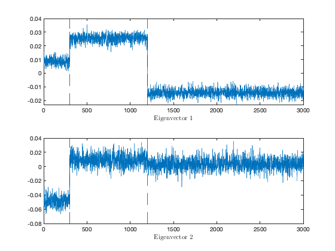
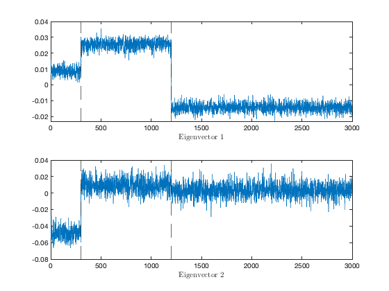
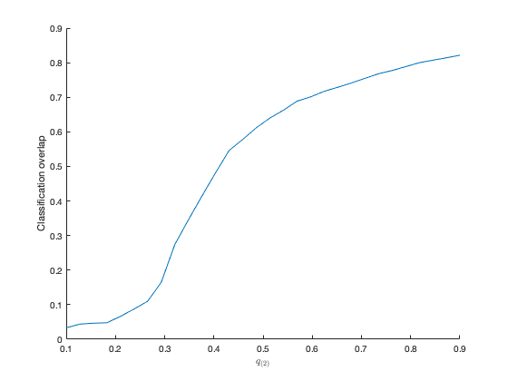

Section 7.1.2: The degree-corrected stochastic block model
This page contains simulations in Section 7.1.2.
Contents
Limiting spectrum and isolated eigen-pairs of a -class DC-SBM
close all; clear; clc n = 3000; cs = [0.1, 0.3, 0.6]; ns = n*cs; k = length(cs); j = @(i) [zeros(sum(ns(1:i-1)),1);ones(ns(i),1);zeros(sum(ns(i+1:k)),1)]; J = [j(1) j(2) j(3)]; testcase = 'left'; switch testcase case 'left' q = 0.1*(randn(n,1)>0)+ 0.8; M = [10, 0, 0; 0, 10, 0; 0, 0, 10]; case 'right' q = 0.8*(randn(n,1)>0)+ 0.1; M = [5, 0, 0; 0, 5, 0; 0, 0, 5]; end C = 1 + M/sqrt(n); P = diag(q)*(J*C*(J'))*diag(q); A_cell = cell(3); for i = 1:k tmp = binornd(1,P(sum(cs(1:(i-1)))*n+1:sum(cs(1:i))*n,sum(cs(1:(i-1)))*n+1:sum(cs(1:i))*n),n*cs(i),n*cs(i)); tmp = tril(tmp,-1)+tril(tmp,-1)'; A_cell{i,i} = tmp; for j = i+1:k A_cell{i,j} = binornd(1,P(sum(cs(1:(i-1)))*n+1:sum(cs(1:i))*n,sum(cs(1:(j-1)))*n+1:sum(cs(1:j))*n),n*cs(i),n*cs(j)); end end A = [A_cell{1,1} A_cell{1,2} A_cell{1,3}; A_cell{1,2}' A_cell{2,2} A_cell{2,3}; A_cell{1,3}' A_cell{2,3}' A_cell{3,3}]; A = A - diag(A); d = A*ones(n,1); B = 1/sqrt(n)*(A-d*d'/sum(d)); [V_B,eigs_B] = eig(B,'vector'); [~,ind] = sort(eigs_B); eigs_B = eigs_B(ind); V_B = V_B(:,ind); figure histogram(eigs_B, 50, 'Normalization', 'pdf','EdgeColor', 'white'); title('Eigenvalues of $B$', 'Interpreter', 'latex') figure subplot(2,1,1) plot(V_B(:,n)) xline(n*cs(1),'--') xline(n*(cs(1)+cs(2)),'--') xlabel('Eigenvector $1$', 'Interpreter', 'latex') subplot(2,1,2) plot(V_B(:,n-1)) xline(n*cs(1),'--') xline(n*(cs(1)+cs(2)),'--') xlabel('Eigenvector $2$', 'Interpreter', 'latex')
 
 Overlap performance of different  on DS-SBM for bimodal
on DS-SBM for bimodal
close all; clear; clc n = 3000; cs = [1/3, 1/3, 1/3]; ns = n*cs; k = length(cs); j = @(i) [zeros(sum(ns(1:i-1)),1);ones(ns(i),1);zeros(sum(ns(i+1:k)),1)]; J = [j(1) j(2) j(3)]; option_alpha = 'any'; % 'optim' or 'any' range_q2 = linspace(0.1,0.9,30); loops = 50; classif_overlap = zeros(length(range_q2),loops); q1 = 0.1; range_index=1; for q2 = range_q2 for loop=1:loops q = (q2-q1)*(rand(n,1)>3/4)+ q1; M = [10, -10, -10; -10, 10, -10; -10, -10, 10]; C = 1 + M/sqrt(n); P = diag(q)*(J*C*(J'))*diag(q); A_cell = cell(3); for i = 1:k tmp = binornd(1,P(sum(cs(1:(i-1)))*n+1:sum(cs(1:i))*n,sum(cs(1:(i-1)))*n+1:sum(cs(1:i))*n),n*cs(i),n*cs(i)); tmp = tril(tmp,-1)+tril(tmp,-1)'; A_cell{i,i} = tmp; for j = i+1:k A_cell{i,j} = binornd(1,P(sum(cs(1:(i-1)))*n+1:sum(cs(1:i))*n,sum(cs(1:(j-1)))*n+1:sum(cs(1:j))*n),n*cs(i),n*cs(j)); end end A = [A_cell{1,1} A_cell{1,2} A_cell{1,3}; A_cell{1,2}' A_cell{2,2} A_cell{2,3}; A_cell{1,3}' A_cell{2,3}' A_cell{3,3}]; A = A - diag(A); d = A*ones(n,1); D = diag(d); switch option_alpha case 'optim' alpha = find_optim_alpha(d); otherwise alpha = 1/2; end L = (sum(d))^alpha*D^(-alpha)*(A-d*d'/sum(d))*D^(-alpha)/sqrt(n); nb_eig = 2; [V_L,~] = eigs(L,nb_eig,'largestreal'); V = D^(alpha-1)*V_L; V_means=zeros(k,nb_eig); for i=1:k V_means(i,:)=mean(V(sum(ns(1:(i-1)))+1:sum(ns(1:i)),:)); end kmeans_output = kmeans(V,k,'Start', V_means); vec=zeros(n,1); tmp=0; for perm=perms(1:k)' for i=1:k vec(sum(ns(1:(i-1)))+1:sum(ns(1:i)))=perm(i)*ones(ns(i),1); end if kmeans_output'*vec>tmp tmp=kmeans_output'*vec; best_vec=vec; end end classif_overlap(range_index,loop) = (sum(best_vec==kmeans_output)/n -1/k)/(1- 1/k); end range_index = range_index+1; end figure; hold on; plot(range_q2,mean(classif_overlap,2)); xlabel('$q_{(2)}$', 'Interpreter', 'latex') ylabel('Classification overlap','Interpreter', 'latex')
警告: 未能在 100 次迭代后收敛。
FUNCTIONS
Code from https://github.com/hafizTiomoko/improved_spectral_community_detection
function optim_alpha = find_optim_alpha(d) n = length(d); q_estim = d./sqrt(sum(d)); range_alpha = linspace(0,1,100); limit = zeros(size(range_alpha)); for alpha_index = 1:length(range_alpha) alpha = range_alpha(alpha_index); q_estim_1_2alpha = q_estim.^(1-2*alpha); q_estim_2_2alpha = q_estim.^(2-2*alpha); left_edge = 0; right_edge = 100; found_a_valid_point = 0; watchdog1 = 1; watchdog1_max = 1e3; tilde_g = 0; tilde_g_tmp = 1; while abs(tilde_g- tilde_g_tmp)>1e-5 && watchdog1<watchdog1_max x = (left_edge + right_edge)/2; watchdog2 = 1; watchdog2_max = 1e2; g_vec = zeros(2,1); g_vec_tmp = ones(2,1); while max(abs(g_vec - g_vec_tmp)>1e-7) && watchdog2<watchdog2_max g_vec_tmp = g_vec; g_vec(1) = sum(q_estim_1_2alpha./(-x-g_vec(1)*q_estim_1_2alpha+g_vec(2)*q_estim_2_2alpha))/n; g_vec(2) = sum(q_estim_2_2alpha./(-x-g_vec(1)*q_estim_1_2alpha+g_vec(2)*q_estim_2_2alpha))/n; watchdog2 = watchdog2 + 1; end if watchdog2 < watchdog2_max found_a_valid_point = 1; tilde_g_tmp = tilde_g; right_edge = x; tilde_g = g_vec(2); else if found_a_valid_point == 0 right_edge = right_edge*2; end left_edge = x; end watchdog1 = watchdog1 + 1; end limit(alpha_index) = -1/tilde_g; end [~,index] = min(limit); optim_alpha = range_alpha(index); end